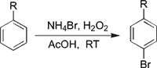
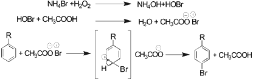

HTML by Rhodium
A simple, efficient, regioselective, environmentally safe, and economical method for the oxybromination of anilines and anisoles without catalyst is reported. The electrophilic substitution of bromine generated in situ from ammonium bromide as a bromine source and hydrogen peroxide as an oxidant for the first time.
Halogenated aromatic compounds are a useful class of intermediates as they are precursors to a number of organo metallic species useful in the synthesis of natural products and pharmaceutically important compounds. The manufacture of a range of bulk and fine chemicals, including flame retardants, disinfectants, and antibacterial and antiviral drugs, involve bromination1. Consequently, a variety of methods for the bromination of aromatics have been reported in the literature1�10.
Traditional methods of aromatic bromination involve the use of non-selective hazardous acidic reagents, such as mineral acids and metal halides that can lead to separation difficulties and unacceptable levels of toxic and corrosive waste. The classical direct bromination of aromatic systems suffers from being wasteful in the bromine employed. One-half ends up as hydrogen bromide. In large-scale operations this is an environmental as well as an economical problem. In oxybromination11�14, HBr is being used as a bromine source and H2O2/TBHP are as oxidants was thought to be a possible solution to overcome these difficulties met with partial success, since HBr is highly toxic and corrosive and is as harmful as molecular bromine to the environment.
Table 1.
Regioselective oxybromination
of anilines with NH4Br and H2O2a
# |
Substrate | Time | Conv |
Sel. (%)b | ||
| o- | p- | di- | ||||
1 |
Aniline | 2.5 h |
94% |
19 | 61 | 20 |
2 |
N,N- Dimethyl- |
2.5 h |
87% |
2 | 96 | 2 |
3 |
2-Methyl- | 2.5 h |
88% |
14 | 79 | 7 |
4 |
2-Chloro- | 2.5 h |
95% |
5 | 95 | � |
5 |
2-Cyano- | 4 h |
99% |
4 | 96 | � |
6 |
2-Nitro- | 4 h |
97% |
27 | 73 | � |
7 |
2-COOH- | 3 h |
99% |
3 | 97 | � |
8 |
N-Acetyl- | 3 h |
87% |
2 | 98 | � |
9 |
4-Methyl- | 2.5 h |
96% |
75 | � | 25 |
10 |
4-Chloro- | 2.5 h |
87% |
99 | � | � |
11 |
4-Nitro- | 2.5 h |
95% |
99 | � | � |
Recently, we developed a highly para-selective method for the oxybromination of aromatic compounds using KBr as a bromine source and H2O2/Oxone� as oxidants15,16. However, an adoption of these methods involving potassium salts (potassium hydroxide) are side products would not be suitable for large-scale eco-friendly processes. We have, therefore, sought to develop an eco-friendly, highly para-selective (regioselective) method for bromination of aromatic compounds based on the use of NH4Br as a bromine source and H2O2 as an oxidant.
Scheme 1
Herein, we report a new method for the selective mono-bromination of anilines and anisoles using NH4Br as a bromine source and H2O2 as an oxidant for the first time. The results are summarized in Tables 1 and 2. Efficient bromination of aromatic substrates with good yields and regioselectivity observed with acetic acid as solvent (Sch. 1).
The bromination is highly para-selective for aniline itself as well as for ortho- and meta-substituted anilines. Para-substituted anilines were brominated in the ortho-position. The yields were generally good to excellent (Table 1). Introduction of an electron-withdrawing group on the aromatic ring slows down the reaction (substantially decreased the rate of ring bromination).
Table 2.
Regioselective oxybromination
of anisoles with NH4Br and H2O2a
# |
Anisole | Time | Conv | Sel.(%)b |
||
o- |
p- |
di- |
||||
1 | Anisole | 3 h | 99% | � | 99 | � |
2 | Veratrole | 4 h | 93% | � | 99 | � |
3 | β-MeO-Naphtol | 2.5 h | 99% | � | 99 | � |
4 | 4-Me-Anisole | 2.5 h | 97% | 99c |
� | � |
5 | 2-Br-Anisole | 3 h | 75% | 99d |
� | � |
6 |
3,4-MeO-BnOH | 12 h | 54% | � | 99 | � |
7 | 4.5 h | 98% | � | 99 | � | |
8 |
Benzodioxole | 5 h | 81% | 99e |
� | � |
9 |
1,3,5-Trimethyl- benzene | 22 h | 72% | � | 99 | � |
10 | 1,2,4-Trimethyl- benzene | 5 h | 89% | � | 99 | � |
11 |
β-Methyl- Naphtalene | 12 h | 56% | 3 | 97 | � |
12 | 4-Br-Anisole | 5 h | 86% | 99f |
� | � |
13 |
4-Acetyl-Anisole | 5 h | � | � | � | � |
14 | 4-Br-Anisole | 4 h | � | � | � | � |
15 |
4-COOH-Anisole | 4 h | � | � | � | � |
16 | 4-Nitro-Anisole | 4 h | � | � | � | � |
In this paper, we describe the high regioselectivity achieved in the ring bromination of several methoxy derivatives of benzene and naphthalene, and the results are summarized in Table 2 . These systems yield selectively para-brominated aromatics unless the para-position is substituted. The para-substituted anisole was brominated in the ortho-position in the case of only p-methylanisole. The electron withdrawing groups presented on para-position of anisoles failed to undergo bromination under the same reaction conditions. 2-Methoxynaphthalene gives 1-bromo-2-methoxynaphthalene. Anisoles give more selective para-brominated products than anilines.
The products obtained under these conditions resulted exclusively from ring bromination. When benzylic positions (susceptible to radical bromination) were present17,18, no benzyl bromides were detected in the crude reaction mixtures. Since we had observed large increase in the ring bromination rate using this system, we decided to study the behavior of methylanisoles and methylanilines in order to determine whether the NH4Br/H2O2 system could achieve ring bromination without competition from benzylic bromination. The results are shown in Table 1 (entries 3 and 9) and Table 2 (entry 5). Even ortho-bromination was favored over side chain bromination in the reaction of 4-methylanisole and 4-methylanilines. The absence of side chain bromination products in reaction conducted in acetic acid suggests a substantial increase in the rate of the ionic process. While less reactive aromatics such as bromo benzene, nitrobenzene, toluene, benzoic acid failed to undergo bromination under the same reaction conditions.
In contrast to what is reported in the oxidative bromination using hydrogen peroxide, the presence of vanadate or molybdate catalyst (19�21) is not required to obtain good selectivities and good yields of brominated materials using NH4Br/H2O2 system. A wide range of solvents have been employed in these reaction including, carbon tetrachloride, hexane, methanol, acetonitrile, and acetic acid. The best results were obtained when acetic acid was used as a solvent compared to others. The role of hydrogen peroxide was confirmed by conducting a blank experiment where the formation of bromo compound was not observed.
Scheme 2
It is assumed that hydrogen peroxide oxidizes the Br- (NH4Br) to Br+ (HOBr), which reacts in the presence of acetic acid (Bronsted acid) with organic substrate to give brominated compounds (Sch. 2).
The brominated aromatic products were analyzed by GC and isolated products were analyzed by 1H NMR and mass spectroscopy
In conclusion, we developed an efficient new method using ammonium bromide as an interesting alternative to HBr and KBr in the oxidative bromination of anilines and anisoles. The present method which is more attractive than the earlier methods, offers the additional advantages such as the commercial availability of the reagents, simple reaction conditions, no evolution of hydrogen bromide, high yield, economical, easy setup and workup, selective mono-bromination with high regioselectivity, inexpensive, and environmentally friendly process makes our method valuable from a preparative point of view. The absence of side chain brominated products in reactions conducted in CH3COOH suggests a substantial increase in the rate of the ionic process.
General Procedure for the Bromination of Anilines and Anisoles
A 25 mL two-necked round bottomed flask was charged with the substrate (2 mmol) and ammonium bromide (2.2 mmol) in acetic acid (4 mL). A 30% H2O2 (2.2 mmol) was added dropwise to the reaction mixture and the contents allowed to stir at room temperature. The reaction was monitored by thin layer chromatography (TLC). After the completion of the reaction, the reaction mixture was treated with saturated sodium bicarbonate solution and extracted with dichloromethane. The organic extract was dried over anhydrous sodium sulfate and solvent evaporated under reduced pressure. The products were purified by column chromatography and confirmed by 1H-NMR and mass spectra.